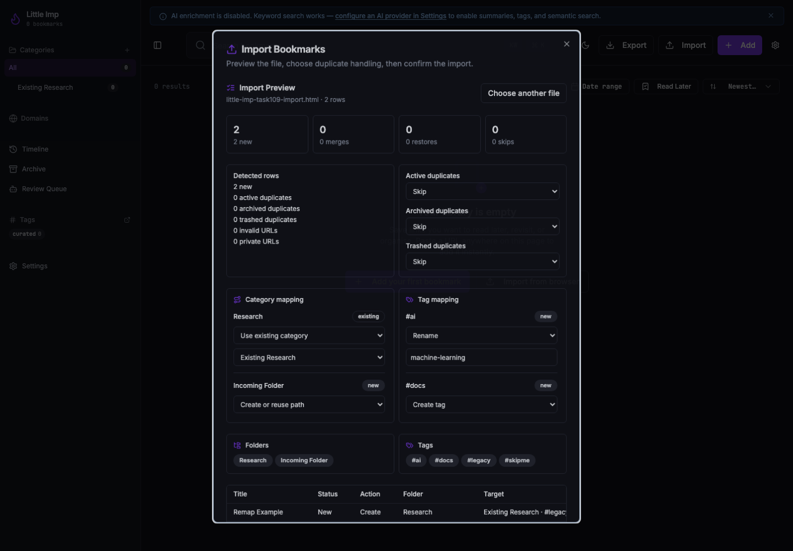
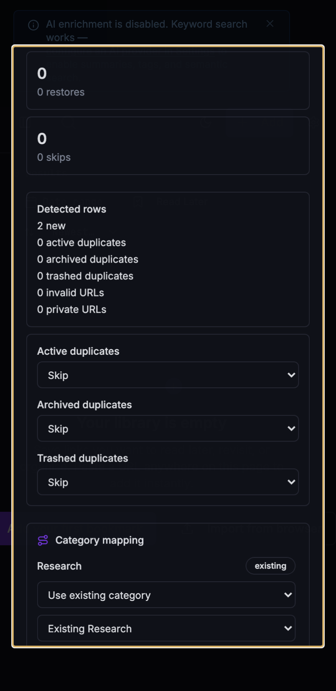

Grimoire Task Report
Import Category And Tag Remapping

Before
The import preview showed detected folders and tags, but commit always applied the source folder hierarchy and source tag names directly.
Problem
TASK-109 requires remapping decisions before commit so imported browser folders and tags can be reconciled with an existing Little Imp library instead of creating unwanted parallel taxonomy.
Changes Added
- Added a multipart
remappingplan forPOST /import/previewandPOST /import. - Resolved folder decisions to existing category IDs or create/reuse category paths, including row-level target category data.
- Resolved tag decisions for existing, new, renamed, and skipped tags, including row-level target tags.
- Applied remapping in the commit path together with duplicate merge and restore-merge policy.
- Inherited remapped parent category targets for nested source folders unless a child folder has its own explicit mapping.
- Validated explicit new/renamed tag targets against the tag API's lowercase hyphen format and length cap.
- Added dense import-dialog controls for category and tag mapping with preview refresh on each mapping change.
- Regenerated API, API contract, and OpenAPI docs from the daemon-owned contract.
Result
Users can now preview and commit imports with explicit taxonomy mapping, and the daemon applies those choices consistently for created rows and duplicate merges.
Verification
bun test daemon/src/test/integration/import.test.tspassed.npx vitest run src/components/ImportDialog.test.tsx src/lib/api.test.tspassed.npm run lintpassed with existing Fast Refresh warnings only.npm run type-checkpassed.npm run docs:apiregenerated contract docs.npm run docs:api:checkpassed.npm run buildpassed with existing Browserslist and chunk-size warnings.npm run test:e2e -- e2e/business-requirements.spec.tspassed.npm run checkpassed after review hardening.git diff --checkpassed.- Captured desktop and narrow visual states against an isolated daemon on port
3212.
Additional Screenshots

Implementation Notes
The daemon normalizes remapping plans during preview and commit, rejects unknown source folders/tags, invalid explicit tag targets, and conflicting new-tag targets, and returns the normalized plan in both preview and accepted-import responses. The frontend stores only user overrides; default server mapping remains implicit until the user changes a folder or tag row.
Files Changed
daemon/src/routes/import.tsdaemon/src/api/contract.tssrc/lib/api.tssrc/components/ImportDialog.tsxdaemon/src/test/integration/import.test.tssrc/components/ImportDialog.test.tsxsrc/lib/api.test.ts